Hi, I'm Nick.
I am

Areas of Expertise
Industry Credentials


Experience & Education
Fullstack Software Engineer
Jan 2024 — Sep 2024Early-stage research startup applying ML and computer networking to real-world problems. Owned the full delivery cycle from API to UI in a fast, research-driven environment.
Master's — Computer Science
2021 — 2023Algorithms & data structures, software testing, TDD, architectural design patterns, Agile, data science and ML fundamentals.
Fullstack Engineer → Project Lead
Sep 2021 — May 2024Joined as an intern, grew into delivery ownership. Led client meetings, managed the full software lifecycle and drove technical decisions across Java backend and Angular frontend.
Junior Data Analyst Program
Apr 2025 — Jul 2025Intensive training in data analytics — visualization, storytelling with data, exploration and data-driven decision making.
My Portfolio
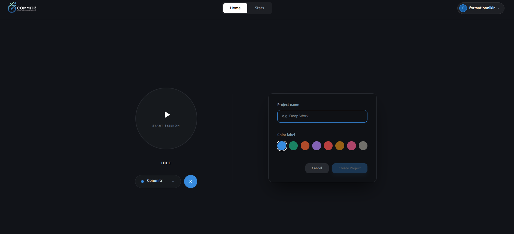
Commitr: Developer Focus & Session Tracker
Developer focus tracker with GitHub-style activity heatmap
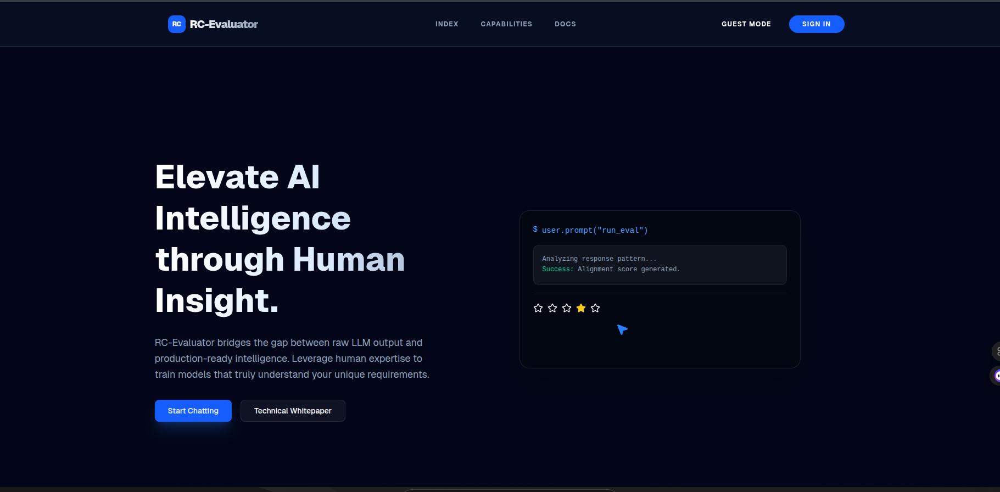
AI Evaluator: Agentic Observability Platform
Agentic RAG evaluation suite with HITL dashboard
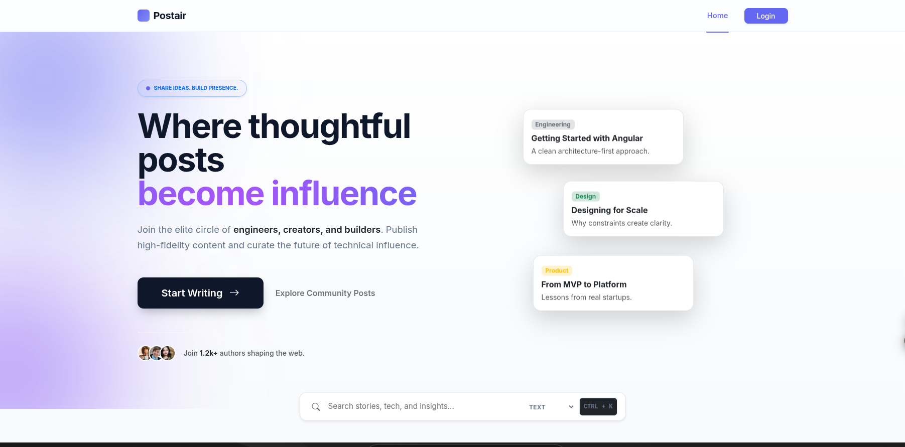
Postair: High-Throughput Content Engine
Sub-50ms p99 content distribution with Transactional Outbox
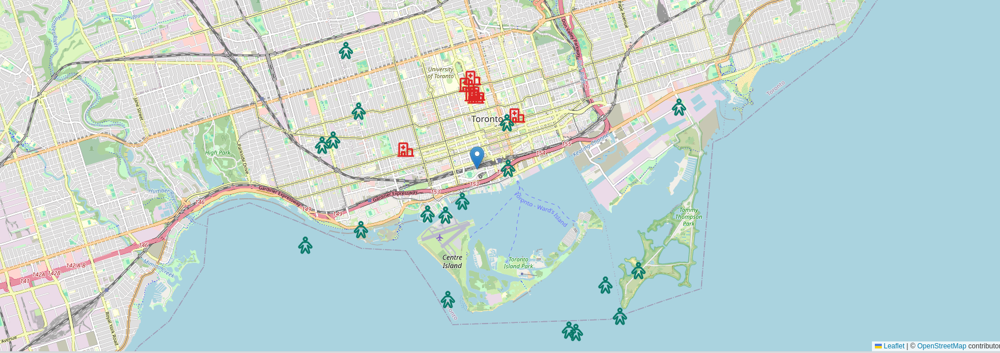
AI Healthcare City Monitor
Real-time ER congestion prediction across Toronto hospitals
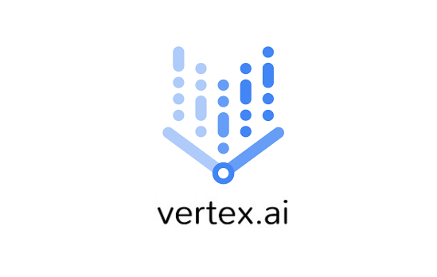
AI Healthcare sickness severity classification
Gemini 2.5 Flash fine-tuned on Vertex AI for severity triage
Firo: Financial CSR Bot
Gen-AI assistant for banking CSR reps with confidence scores

Firo ML: User interaction topic classification
Finance topic classifier on 50k transcripts with SBERT
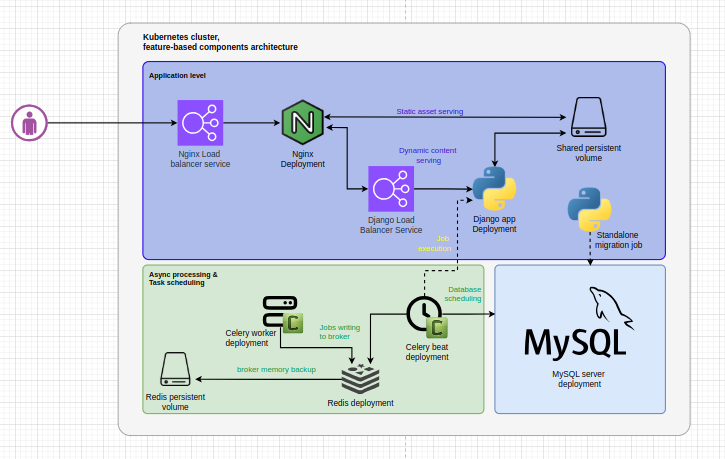
Remote System Monitoring
Streaming server metrics dashboard on Django + K8s + CodePipeline
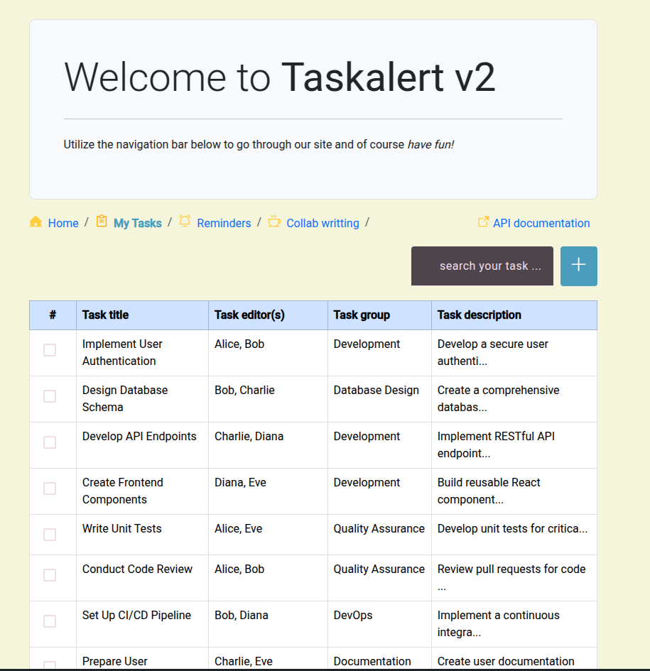
Taskalert Full UI
Angular 19 microfrontend with native federation and NgRx
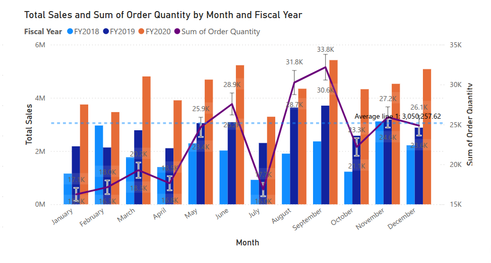
Power BI Dashboard on Public Dataset
Power BI dashboard with storytelling on public dataset
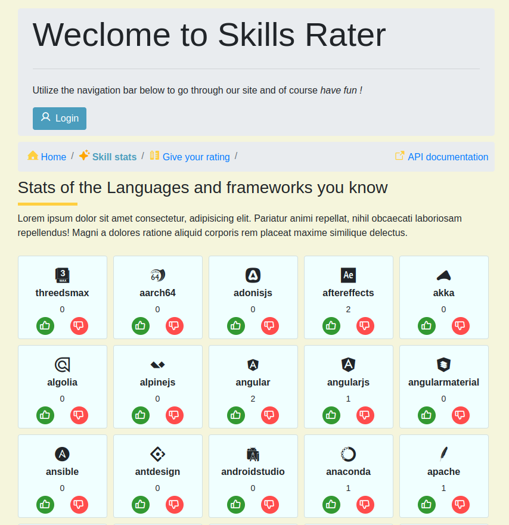
Reactive Springboot Skillrater App
Reactive Spring Boot with SSE and multi-threaded live voting
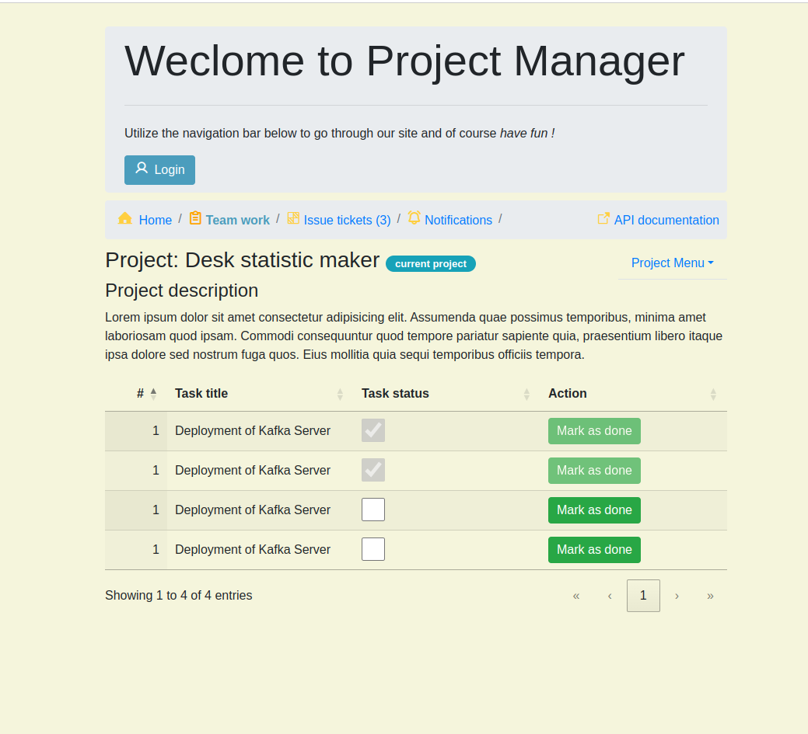
Insight Hub: Springboot Microservices
Microservices issue tracker with Kafka, Resilience4J and LDAP
Taskalert v2: Frontend Application
MEAN stack task manager with NgRx and PusherJS notifications
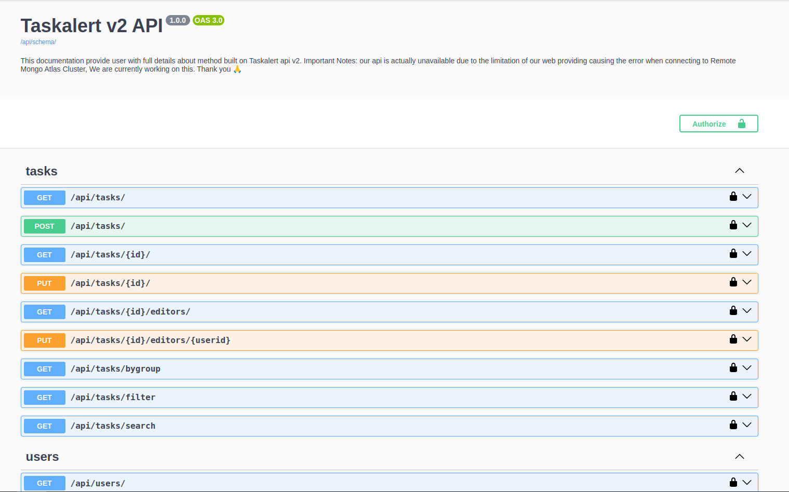
Taskalert v2: Backend Application
Django REST backend with RabbitMQ and WebSocket channels
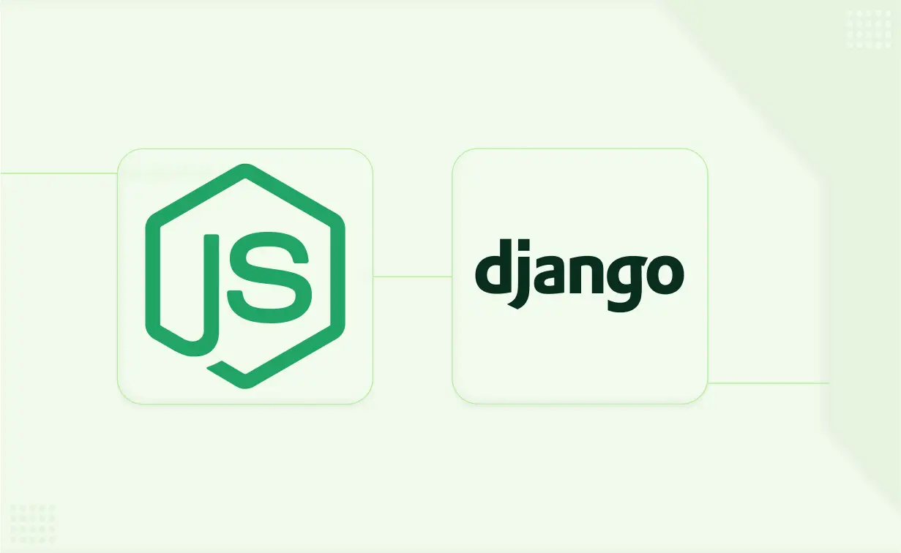
Python AI Real‑Time Chat Message Filtering
Kafka-powered AI agent monitoring live chat for policy compliance
Python Asynchronous Web Data Scraper
Async Django scraper with Selenium for dynamic JS-rendered sites
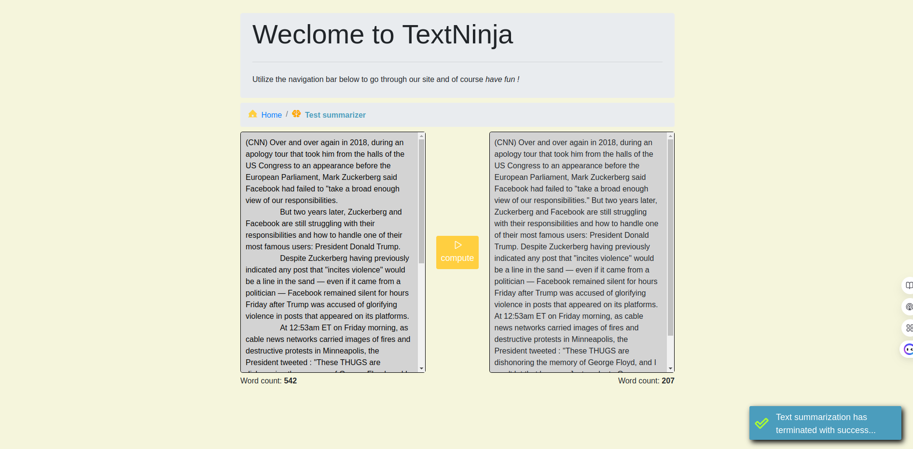
Python Advanced NLP Text Processing
BERT-based text summarization and contextual keyword augmentation
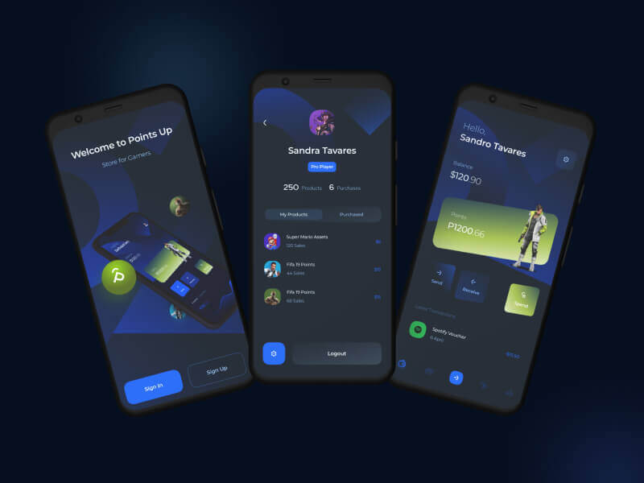
Mobile Application UI & Interaction Design
High-fidelity Figma prototype with mobile interaction patterns